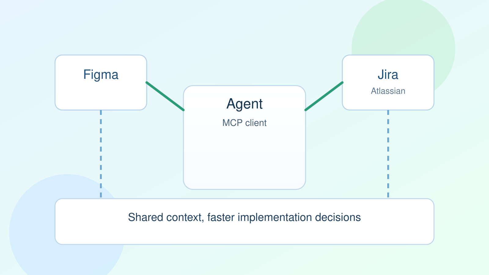

Using MCP to Your Advantage at Work

MCP is most useful when you stop thinking about it as "AI magic" and treat it as an interface contract between your agent and your real tools.
In my day-to-day flow, two integrations are consistently high leverage: Figma and Atlassian. One gives product context, the other gives delivery context. Together, they remove a lot of back-and-forth.
What changes once MCP is in place
Without MCP, your agent is mostly a chat box. With MCP, it can pull design specs, inspect Jira tickets, cross-check acceptance criteria, and propose updates in one loop.
- Read design tokens and component names from Figma files.
- Read sprint scope and issue dependencies from Jira.
- Create implementation plans that stay aligned with product and delivery constraints.
A practical workflow
Give the agent a task like: "Draft an implementation plan for this onboarding redesign."
Then let it call MCP tools in sequence:
figma.get_file_nodesto collect target frames/components.jira.search_issuesto pull related tickets and blockers.jira.create_commentto publish a scoped, traceable implementation plan.
That one flow saves context-switching and leaves an audit trail in the system your team already uses.
Guardrails that matter
Most failures are not model failures. They are integration and permission failures. Keep these guardrails:
- Read-only by default. Escalate write permissions only for explicit actions.
- Require source links in every generated plan.
- Log each tool call with input/output metadata for debugging.
Engineering payoff
MCP reduces the "lost context tax" between product, design, and engineering. Engineers spend less time gathering information and more time making decisions.
For agentic teams, that is the point: shorter path from intent to correct action.